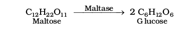

Life is possible due to the coordination of various chemical reactions in living organisms. An example is the digestion of food, absorption of appropriate molecules and ultimately production of energy. This process involves a sequence of reactions and all these reactions occur in the body under very mild conditions. This occurs with the help of certain biocatalysts called enzymes. Almost all the enzymes are globular proteins. Enzymes are very specific for a particular reaction and for a particular substrate. They are generally named after the compound or class of compounds upon which they work. For example, the enzyme that catalyses hydrolysis of maltose into glucose is named as maltase.

Sometimes enzymes are also named after the reaction, where they are used. For example, the enzymes which catalyse the oxidation of one substrate with simultaneous reduction of another substrate are named as oxidoreductase enzymes. The ending of the name of an enzyme is -ase.
Enzymes are needed only in small quantities for the progress of a reaction. Similar to the action of chemical catalysts, enzymes are said to reduce the magnitude of activation energy. For example, activation energy for acid hydrolysis of sucrose is 6.22 kJ mol–1, while the activation energy is only 2.15 kJ mol–1 when hydrolysed by the enzyme, sucrase. Mechanism for the enzyme action has been discussed in Unit 5.
144 Vitamins
It has been observed that certain organic compounds are required in small amounts in our diet but their deficiency causes specific diseases. These compounds are called vitamins. Most of the vitamins cannot be synthesised in our body but plants can synthesise almost all of them, so they are considered as essential food factors. However, the bacteria of the gut can produce some of the vitamins required by us. All the vitamins are generally available in our diet. Different vitamins belong to various chemical classes and it is difficult to define them on the basis of structure. They are generally regarded as organic compounds required in the diet in small amounts to perform specific biological functions for normal maintenance of optimum growth and health of the organism. Vitamins are designated by alphabets A, B, C, D, etc. Some of them are further named as sub-groups e.g. B1, B2, B6, B12, etc. Excess of vitamins is also harmful and vitamin pills should not be taken without the advice of doctor.
The term "Vitamine" was coined from the word vital + amine since the earlier identified compounds had amino groups. Later work showed that most of them did not contain amino groups, so the letter 'e' was dropped and the term vitamin is used these days.